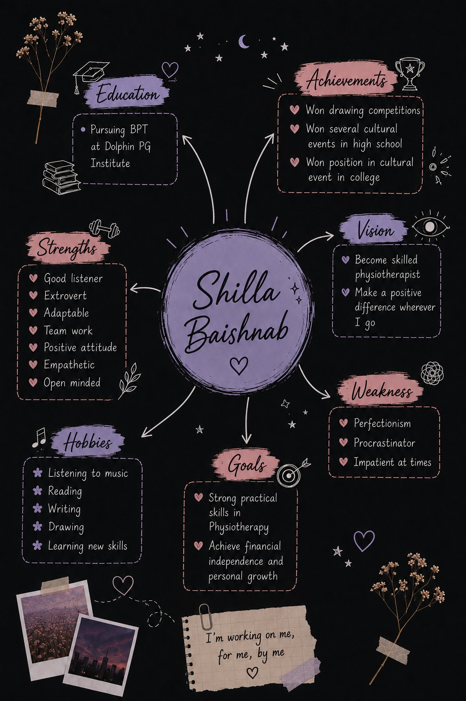

Drawing Competitions
Won drawing competitions, reflecting my interest in creativity and visual expression.
AEC PORTFOLIO · 2026
Bachelor of Physiotherapy · 2nd Year · 3rd Semester
A student learning to turn knowledge, communication and empathy into meaningful professional practice.

I am Shilla Baishnab, a Bachelor of Physiotherapy student currently pursuing my second year, third semester at Dolphin PG Institute of Biomedical and Natural Sciences.
I completed my schooling up to Class XII at Jawahar Navodaya Vidyalaya, Mawphlang. I chose physiotherapy because I was drawn to a healthcare profession that focuses strongly on movement, functional recovery and helping people regain independence through rehabilitation and active participation.
As I continue my journey, I want to develop not only sound clinical knowledge but also the communication, empathy, adaptability and teamwork needed to become a dependable healthcare professional.
Completed my schooling through Class XII, building a strong foundation of learning, participation and personal growth.
Dolphin PG Institute of Biomedical and Natural Sciences. Currently in 2nd year, 3rd semester.
Strengthening practical skills, professional communication and patient-centred thinking through future academic and clinical experiences.
My strengths shape the kind of healthcare professional I want to become.
I value understanding people before responding.
I try to understand different perspectives with patience and care.
I can adjust to new environments, people and situations.
I work well with others and value shared responsibility.
I try to approach challenges with a constructive mindset.
I stay willing to learn, improve and consider new ideas.
Experiences that helped me become more confident, creative and willing to participate.
Won drawing competitions, reflecting my interest in creativity and visual expression.
Won several cultural events during high school and actively participated in creative activities.
Secured a position in a cultural event during college.
This section is intentionally open so I can keep adding activities, presentations, certificates and reflections throughout the course.
Future AEC activities will be added here.
Space for presentation topics, dates and learning outcomes.
Certificates and workshops can be added here.
Short reflections on skills and personal development.
My personality, interests, achievements, vision and goals — all in one place.

MY VISION
Improve my practical skills, strengthen my understanding of physiotherapy concepts and become more confident in applying what I learn.
Establish my own physiotherapy practice, continue growing professionally and eventually explore opportunities to work internationally.
“I'm working on me, for me, by me.”
This space is ready for future uploads.